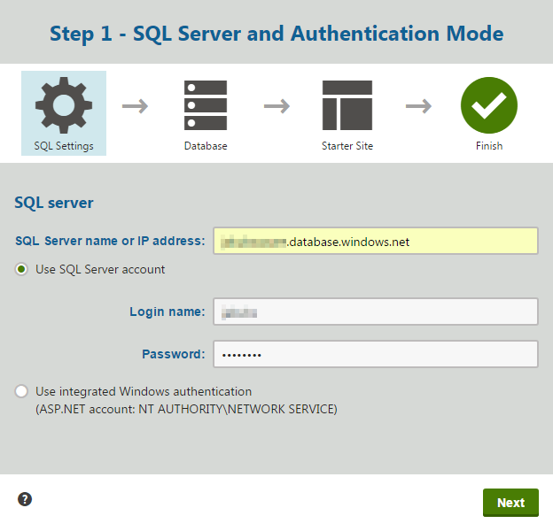
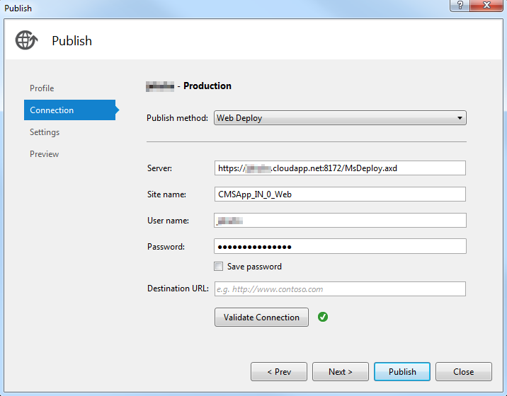

Developing Kentico Azure projects locally
You can start developing the application in the local computing emulator provided by Azure SDK. You can use the emulator to test the website during its development without actually hosting it in the cloud.
You can use either a standard SQL database or the Azure SQL Database (note that when developing locally with a database in the cloud, you may experience slower performance based on the location of the server and database services).
However, we recommend that you use a Microsoft Azure Storage account as a file system for your project.
Developing Azure projects locally in the emulator
Prepare an SQL database or prepare a database on Microsoft Azure:
Create an Azure Storage account through the Microsoft Azure Management Portal.
Open your Azure project in Visual Studio.
Right-click the CMSAzure\Roles\CMSApp role and select Properties.
Switch to the Settings tab.
Select Local as the Service Configuration.
Set the value of CMSConnectionString key to the connection string for your database.
If you are connecting to an Azure SQL Database, you can find the connection string on the Azure Management Portal in SQL Databases -> select your database -> Overview tab -> Show database connection strings link.
Use 'username@servername' for the User ID connection string parameter.
Based on what storage you want to use, choose one of the following options - either the Azure storage or the Storage emulator:
Azure storage - set the values of CMSAzureAccountName and CMSAzureSharedKey keys for your Azure Storage.
You can find these values on the Azure Management Portal in Your storage account -> Access keys tab. Use the Storage account name and one of the generated access key values (Azure provides two access keys so that you can maintain connections using one key while regenerating the other ).
Storage emulator - set devstoreaccount1 as the CMSAzureAccountName and Eby8vdM02xNOcqFlqUwJPLlmEtlCDXJ1OUzFT50uSRZ6IFsuFq2UVErCz4I6tq/K1SZFPTOtr/KBHBeksoGMGw== as the CMSAzureSharedKey.
See Use the Azure Storage Emulator for Development and Testing for more information.
Repeat the same steps for the SmartSearchWorker role.
Right-click the CMSAzure project in the Solution Explorer and select Set as StartUp Project.
Run the project in the debug mode.
Go through the Kentico database installation when the system automatically opens the database installation in a browser.
If developing on the Azure SQL Server, enter the SQL server name in the following format: servername.database.windows.net.

Setting up the Azure SQL server
Your web project is now prepared for local development.
CMSHashStringSalt key
We recommend that you make sure that the CMSHashStringSalt key is set to a single static value in your web.config file. See The CMSHashStringSalt key is identical in all environments.
Developing Azure projects locally as web applications
If you are having trouble running your project in the local emulator, you can develop your Azure project as a normal web application project. We recommend this approach only if you do not plan to perform any customizations specific to the Microsoft Azure environment.
Prepare an SQL database or create a new Azure SQL Server and database.
Create an Azure Storage account through the Azure Management Portal.
Open your Azure project in Visual Studio using the WebApp.sln file.
Open the CMSApp\Web.config file.
Add the CMSConnectionString key and value to the <connectionStrings> section of the web.config file.
<connectionStrings><addname="CMSConnectionString"connectionString="Data Source=tcp:YourServerName.database.windows.net,1433;Initial Catalog=YourDatabaseName;User Id=YourUsername@YourServerName;Password=YourPassword;"/></connectionStrings>Replace YourServerName, YourDatabaseName, YourUsername and YourPassword with your own values.
You can find the connection string of Azure SQL Database on the Azure Management Portal in SQL Databases -> select the database -> Overview tab -> Show database connection strings link.
Add the CMSAzureAccountName and CMSAzureSharedKey keys to the <appSettings> section of the web.config file.
<appSettings>...<addkey="CMSExternalStorageName"value="azure"/><addkey="CMSAzureAccountName"value="YourStorageAccountName"/><addkey="CMSAzureSharedKey"value="YourPrimaryAccessKey"/></appSettings>Replace YourStorageAccountName and YourPrimaryAccessKey with your own values.
You can find these values on the Azure Management Portal in Your storage account -> Access keys tab. Use the Storage account name and one of the generated access key values (Azure provides two access keys so that you can maintain connections using one key while regenerating the other ).
Right-click the CMSApp project in the Solution Explorer and select Set as StartUp Project.
Run the project in debug mode.
Go through the Kentico database installation when the system automatically opens the database installation in a browser.
If developing on Azure SQL Server, enter the SQL server name in the following format: servername.database.windows.net.
You can now develop your project as a standard web application project.
CMSHashStringSalt key
We recommend that you make sure that the CMSHashStringSalt key is set to a single static value in your web.config file. See The CMSHashStringSalt key is identical in all environments.
Storing media files, metafiles and attachments when developing Azure projects as web applications
If you store media files, metafiles and attachments in the file system (the Settings -> System -> Files -> Store files in the file system setting is selected) when you develop your Azure project as a web application, these files are stored downright in your project folders as media files. This may cause problems after you deploy your project to the Microsoft Azure platform, as these files are regarded as read-only and deleting such files from the administration interface may not be allowed.
Therefore, we recommend that you configure your project to either:
Store files only in the database - clear the Store files in the file system setting and select the Store files in the database setting in Settings -> System -> Files.
orStore such files in the Azure blob storage - select the Store files in the file system setting and configure the CMSAzureAccountName and CMSAzureSharedKey keys in your web.config file as specified in this section.
You can find more information about the file storing settings in Storing files.
Error associated with this problem:
"Failed to publish document: File.Delete: File <filename> cannot be deleted because it exists in application file system."
Deploying locally developed Azure projects
When you are ready, you can move your locally developed Azure project to the production environment while still being able to make changes to the project locally. For this scenario to work, you must use only one instance of the CMSApp web role.
Deployment with migration to a new database
This procedure presumes that you used a local SQL database and you want to migrate the database to the Azure SQL Database.
Create a new Azure SQL Database Server and a database and configure the server's firewall to accept your IP address.
Deploy your SQL server, for example according to instructions in the Migrate SQL Server database to SQL Database article.
Open your Azure project in Visual Studio using the CMSAzure.sln file.
In Properties of the CMSApp web role, on the Settings tab, in the Cloud service configuration, fill the CMSAzureAccountName and CMSAzureSharedKey keys with appropriate values for your Azure Storage (the same as for the Local configuration).
Set the CMSConnectionString value to the connection string of the new Azure SQL database.
Deploy your project to the created Cloud Service.
Make sure that the Enable Remote Desktop for all roles and Enable Web Deploy for all web roles (requires Remote Desktop) options are selected.
Now you can deploy changes to the project files quickly using the Web Deploy functionality.
Tip: You can also use other approaches to deploy an on-premise database to Azure SQL Database. See the SQL Server database migration to SQL Database in the cloud article for more information.
Alternative database deployment
If the database deployment process does not suit you, you can export and import your Kentico website instead. This way you can choose particular object types which you want to deploy.
Open the Kentico administration interface and open the Sites application.
Click Export site.
In Properties of the CMSApp web role, on the Settings tab, in the Cloud service configuration, fill the CMSAzureAccountName and CMSAzureSharedKey keys with appropriate values for your Azure Storage (the same as for the Local configuration).
Set the CMSConnectionString value to the connection string of the new Azure SQL database.
Deploy your project to the created Cloud Service.
Make sure that the Enable Remote Desktop for all roles and Enable Web Deploy for all web roles (requires Remote Desktop) are selected.
Install a new database for your project.
Import the previously exported website in Sites application -> Import site or objects.
Deployment when using the same database
This procedure presumes that you are using the Azure SQL Database from the beginning and you do not need to migrate the database.
Open your Azure project in Visual Studio using the CMSAzure.sln file.
In Properties of the CMSApp web role, on the Settings tab, in the Cloud service configuration, fill the CMSAzureAccountName and CMSAzureSharedKey keys with appropriate values for your Azure Storage (the same as for the Local configuration).
Set the CMSConnectionString value to the connection string of your database (the same as for the Local configuration).
Deploy your project to the created Cloud Service.
Make sure that the Enable Remote Desktop for all roles and Enable Web Deploy for all web roles (requires Remote Desktop) options are selected.
Now you can deploy changes to the project files quickly using the Web Deploy functionality.
Web Deploy
If you are performing web deploy from the same computer from which you performed the initial deployment, the procedure is straightforward; you can use an already created publish profile:
Right-click the CMSApp project and select Publish.
Select the existing publish profile from the drop-down list.
Switch to the Connection tab.
Provide the password for remote desktop connection.
Click Publish.
If you are performing web deploy from a different computer than the one from which you performed the initial deployment, you need to create a new publish profile:
Right-click the CMSApp project and select Publish.
Click the drop-down list and select <New profile...>.
Type the name of the profile and click OK.
On the Connection tab, select Web Deploy as the Publish method.
Provide the Server address:
Open the Azure Management Portal in a browser.
Select Cloud services -> your cloud service -> Overview tab.
Copy the Site URL without the protocol (http://) and trailing slash (/) to the Server field of the web deploy profile in the following format:
https://YourSiteURL:8172/MsDeploy.axd
Provide the Site name:
This corresponds to the name of your website registered in IIS of the server.
You can find the name by remotely connecting to the server (Cloud services -> your cloud service -> Instances tab -> Click Connect in the bottom panel and run the downloaded file).
The default value is CMSApp_IN_0_Web.
Type the username and password for remote desktop connection.

Configuring Web Deploy for local developmentSwitch to the Settings tab.
Choose the build Configuration.
Click Publish.
Final deploy
When your project is fully developed and ready to go live, Deploy your project again, with the Enable Remote Desktop for all roles and Enable Web Deploy for all web roles (requires Remote Desktop) options cleared. After that, your CMSApp web role can use more than one instance.
Setting up post-production development of Azure projects
If you realize that you need to make changes to your Azure project already in the production, you can utilize the content staging functionality to synchronize the database changes between your local development and production projects. However, you will still need to deploy your project files.
Moreover, you may want to set up a new blob storage to separate the content files of your local and production projects. The synchronization of these files will be handled by the content staging functionality.
Although there are other ways to develop your projects after you promote them to the production, we recommend the following configuration:
Set the local configuration of your project to connect to a local database and the newly created blob storage:
Open your Azure project in Visual Studio using the CMSAzure.sln file.
Double-click the CMSAzure\Roles\CMSApp role.
Switch to the Settings tab and select Local as the Service Configuration.
Make sure that the value of CMSConnectionString key is set to the connection string for your local database (you can use your existing development database or copy your production database to a local server).
Set the values of CMSAzureAccountName and CMSAzureSharedKey keys for the newly created Azure Storage.
You can find these values on the Azure Management Portal in Your storage account -> Access keys tab. Use the Storage account name and one of the generated access key values (Azure provides two access keys so that you can maintain connections using one key while regenerating the other ).
Set these settings also for the SmartSearchWorker role.
Configure the content staging between your projects. Configure your local project as the source server and production project as the target server.
Staging large files (larger than 2 GB)
By default, the system will not stage files that are larger than 2 GB. If you need to stage larger files, change the maximum content and request size values in your projects.
CMSHashStringSalt key
The CMSHashStringSalt key defines the salt value that the system uses in hash functions, for example in macro signatures and media library links. For the content to be synchronized properly through Content staging, the value of this key must be identical in all environments you use. Otherwise, the hash values of objects will be different in different environments.
Therefore, make sure that the value of this web.config key is set to a single static value, for example a random GUID. If the key is not present in the web.config file, it means that its default value is the connection string of your project. In this case, we recommend that you add this key to your local project with the connection string of your production project as a value.
Note: We do not recommend changing the CMSHashStringSalt key value for the production project, as it will break macro signatures and media library links.
Your local project is now configured to be developed separately from the production project.
Deploying updated production projects
After you have configured the content staging functionality for your projects, you can propagate object changes to the production project through the content staging functionality (see Synchronizing the content). If you develop custom code, you also need to redeploy your project to the Staging environment and swap staging with production.
Make sure that the cloud configuration in your project is set to connect to the production database and production Azure storage.
Open your Azure project in Visual Studio using the CMSAzure.sln file.
Double-click the CMSAzure\Roles\CMSApp role.
Switch to the Settings tab and select Cloud as the Service Configuration.
Make sure that the value of CMSConnectionString key is set to the connection string for your production database.
Set the values of CMSAzureAccountName and CMSAzureSharedKey keys for the production Azure Storage.
Set these settings also for the SmartSearchWorker role.
Deploy your project with the Enable Remote Desktop for all roles and Enable Web Deploy for all web roles (requires Remote Desktop) options CLEARED.
Disable Smart search functionality in the staging deployment (Smart search cannot run simultaneously on two projects connected to the same database):
Open the Kentico administration interface and the Settings application.
Select the System -> Search category.
Clear the Enable smart search indexing setting.
Click Save.
Test that the staging website works as expected.
Do not make any changes to the website at this moment. The staging website is connected to the production database and blob storage, which could cause inconsistencies if objects are modified through the staging project.
Swap production deployment with staging deployment:
Open the Azure Management Portal.
Select your Cloud service and switch to the Overview tab.
Click Swap in the top panel. Azure instantly swaps the production and staging deployments.
Stop or delete the Staging deployment (so that you can enable Smart search again).
Enable Smart search functionality in the production deployment.
Open the administration interface of your local project and synchronize the content changes.
You have redeployed your locally developed changes to the production.